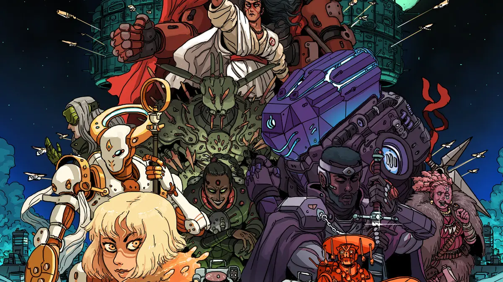

Logan's TTRPG Compendium
A place for all things that Logan does involving table-top RPGs!

This website will serve to catalogue my interest in varying TTRPG games, settings, and etc. For now, this includes mostly items from the Lancer TTRPG — a mech-focused game taking place in a far-future version of our Milky Way galaxy. Other potential contents include:
- Candela Obscura - a horror-themed, Critical Role-created game that takes place in a fictional turn-of-the-century metropolis, in which electricity is new and magick is all but unheard of.
- Vaults of Vaarn - a post-apocalyptic, futuristic, rules-light hack on another system called Knave.
- Dungeons and Dragons Fifth Edition (DnD5e) - undoubtedly the most popular TTRPG in the world, DnD5e is your classic fantasy power trip
— complete with wizards, goblins, gold, and (of course) dragons.